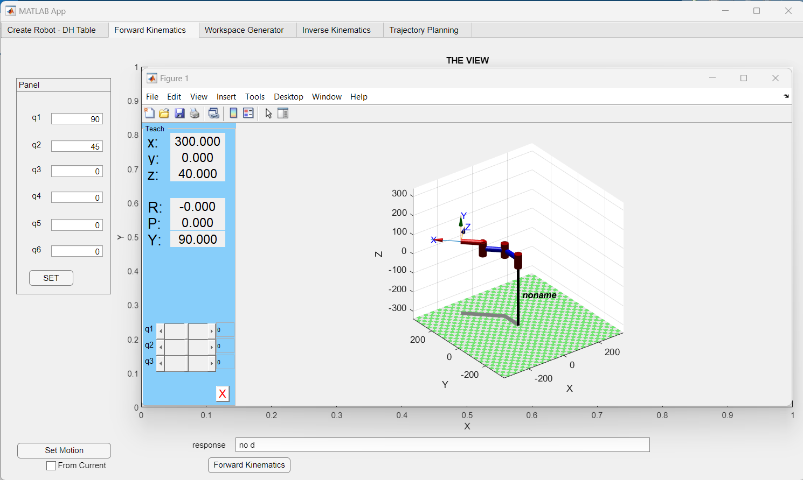

GUI for Modeling n-DOF Robot
What:
This project developed a graphical user interface (GUI) for modeling and controlling n-DOF (Degrees of Freedom) robots. The GUI was created using MATLAB's app building platform, enhancing efficiency in trajectory planning and control for researchers and robotics enthusiasts.
How:
The GUI features:
- Matlab App: Custom-built interface utilizing MATLAB's capabilities for modeling and controlling robots with varying degrees of freedom.
- Efficiency: Streamlines trajectory planning and control, enabling quick analysis and adjustment of robot movements.
The development process involved:
- Design and Development: Iterative refinement of GUI features to ensure user-friendly interface and functionality.
- Testing: Validation through simulation and real-world application to verify accurate robot modeling and control.
Results:
The GUI enhances:
- Trajectory Planning: Facilitates precise trajectory planning and control for complex robot movements.
- User Experience: Improves usability and accessibility for researchers and robotics enthusiasts in studying n-DOF robots.
The project contributes to advancing robotics research by providing an efficient tool for modeling and controlling complex robot systems.